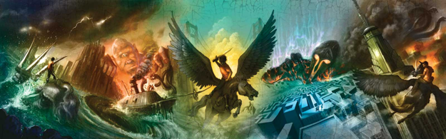
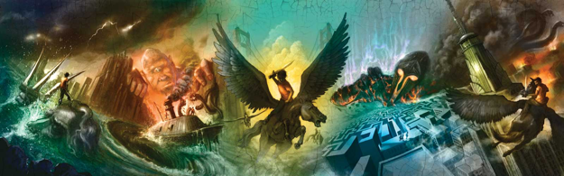
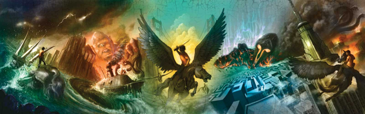
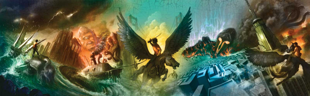

Percy Jackson, de doze anos, embarca na jornada mais perigosa de sua vida. Com a ajuda de um sátiro e da filha de Atena, Percy precisa atravessar os Estados Unidos para capturar um ladrão que roubou a arma original de destruição em massa — o raio-mestre de Zeus. Ao longo do caminho, ele precisa enfrentar uma série de inimigos mitológicos determinados a detê-lo. Acima de tudo, ele precisa se reconciliar com um pai que nunca conheceu e com um Oráculo que o alertou sobre a traição de um amigo.
Ver página do livro Cronograma de atividades diárias do Acampamento Meio SangueQuando a árvore de Thalia é misteriosamente envenenada, as fronteiras mágicas do Acampamento Meio-Sangue começam a ruir. Agora, Percy e seus amigos têm apenas alguns dias para encontrar o único item mágico poderoso para salvar o acampamento antes que seja invadido por monstros. A pegadinha: eles precisam navegar pelo Mar dos Monstros para encontrá-lo. Ao longo do caminho, Percy precisa organizar uma ousada operação de resgate para salvar seu velho amigo Grover, e descobre um terrível segredo sobre sua própria família, que o faz questionar se ser filho de Poseidon é uma honra ou uma maldição.
Ver página do livro Referência à Odisseia de Homero + EPIC - The Musical
Quando Percy Jackson recebe um chamado urgente de socorro de seu amigo Grover, ele imediatamente se prepara para a batalha. Ele sabe que precisará de seus poderosos aliados semideuses ao seu lado, sua fiel espada de bronze Contracorrente e... uma carona de sua mãe.
Os semideuses correm para o resgate e descobrem que Grover fez uma descoberta importante: dois poderosos meio-sangues cuja ascendência é desconhecida. Mas isso não é tudo o que os aguarda. O senhor titânico Cronos engendrou seu plano mais traiçoeiro até então, e os jovens heróis acabaram de ser vítimas.
Eles não são os únicos em perigo. Um monstro ancestral surgiu — um que dizem ser tão poderoso que poderia destruir o Olimpo — e Ártemis, a única deusa que poderia saber como rastreá-lo, está desaparecida. Agora, Percy e seus amigos, juntamente com os Caçadores de Ártemis, têm apenas uma semana para encontrar a deusa sequestrada e desvendar o mistério do monstro que ela caçava. Ao longo do caminho, eles devem enfrentar seu desafio mais perigoso até agora: a assustadora profecia da maldição do titã.